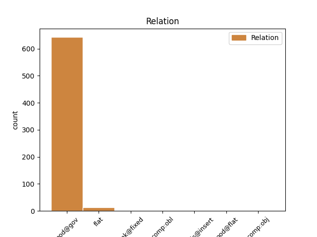
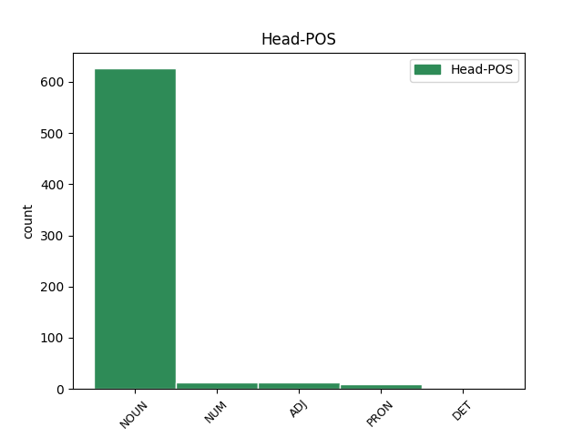
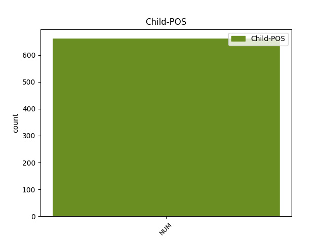

Distribution of features within this leaf



Agreement Rules sorted by frequency.
- When the dependent token is the modifer(mod@gov) of the head token, and the head token is NOUN and the dependent token is NUM.
1 Rzeczywiście _ _ _ _ 0 _ _ _
2 , _ _ _ _ 0 _ _ _
3 chińska _ _ _ _ 0 _ _ _
4 zdolność _ _ _ _ 0 _ _ _
5 produkcyjna _ _ _ _ 0 _ _ _
6 wzrosła _ _ _ _ 0 _ _ _
7 z _ _ _ _ 0 _ _ _
8 1,9 _ _ _ _ 0 _ _ _
9 miliona _ _ _ _ 0 _ _ _
10 ton _ _ _ _ 0 _ _ _
11 w _ _ _ _ 0 _ _ _
12 1993 _ _ _ _ 0 _ _ _
13 r _ _ _ _ 0 _ _ _
14 . _ _ _ _ 0 _ _ _
15 do _ _ _ _ 0 _ _ _
16 2,4 2,4 NUM num:sg:gen:m3:rec Animacy=Inan|Case=Gen|Gender=Masc|Number=Sing|NumForm=Digit|NumType=Card 18 mod@gov _ _
17 miliona _ _ _ _ 0 _ _ _
18 ton tona NOUN subst:pl:gen:f Case=Gen|Gender=Fem|Number=Plur 0 _ _ _
19 w _ _ _ _ 0 _ _ _
20 1998 _ _ _ _ 0 _ _ _
21 r _ _ _ _ 0 _ _ _
22 . _ _ _ _ 0 _ _ _
1 — _ _ _ _ 0 _ _ _
2 Ale _ _ _ _ 0 _ _ _
3 ja _ _ _ _ 0 _ _ _
4 nie _ _ _ _ 0 _ _ _
5 mam _ _ _ _ 0 _ _ _
6 czterdziestu czterdzieści NUM num:pl:gen:m3:congr:ncol Animacy=Inan|Case=Gen|Gender=Masc|Number=Plur|NumForm=Word 0 _ _ _
7 pięciu pięć NUM num:pl:gen:m3:congr:ncol Animacy=Inan|Case=Gen|Gender=Masc|Number=Plur|NumForm=Word 6 flat _ _
8 lat _ _ _ _ 0 _ _ _
9 . _ _ _ _ 0 _ _ _
1 Kiedy _ _ _ _ 0 _ _ _
2 Sonny _ _ _ _ 0 _ _ _
3 zobaczył _ _ _ _ 0 _ _ _
4 ich on PRON ppron3:pl:acc:m1:ter:akc:npraep Animacy=Hum|Case=Acc|Gender=Masc|Number=Plur|Person=3|PrepCase=Npr|PronType=Prs|Variant=Long 0 _ _ _
5 oboje oba NUM num:pl:acc:m1:rec:col Animacy=Hum|Case=Acc|Gender=Masc|Number=Plur|NumForm=Word|NumType=Sets 4 mod@gov _ SpaceAfter=No
6 , _ _ _ _ 0 _ _ _
7 wyszedł _ _ _ _ 0 _ _ _
8 zza _ _ _ _ 0 _ _ _
9 biurka _ _ _ _ 0 _ _ _
10 i _ _ _ _ 0 _ _ _
11 wziął _ _ _ _ 0 _ _ _
12 żonę _ _ _ _ 0 _ _ _
13 Hagena _ _ _ _ 0 _ _ _
14 w _ _ _ _ 0 _ _ _
15 ramiona _ _ _ _ 0 _ _ _
16 . _ _ _ _ 0 _ _ _
1 Poza _ _ _ _ 0 _ _ _
2 tym _ _ _ _ 0 _ _ _
3 , _ _ _ _ 0 _ _ _
4 przeznaczono _ _ _ _ 0 _ _ _
5 20000 _ _ _ _ 0 _ _ _
6 złotych _ _ _ _ 0 _ _ _
7 na _ _ _ _ 0 _ _ _
8 wydawanie _ _ _ _ 0 _ _ _
9 miesięcznika _ _ _ _ 0 _ _ _
10 " _ _ _ _ 0 _ _ _
11 List _ _ _ _ 0 _ _ _
12 do _ _ _ _ 0 _ _ _
13 PANI _ _ _ _ 0 _ _ _
14 " _ _ _ _ 0 _ _ _
15 , _ _ _ _ 0 _ _ _
16 zgodnie _ _ _ _ 0 _ _ _
17 z _ _ _ _ 0 _ _ _
18 umową _ _ _ _ 0 _ _ _
19 zawartą _ _ _ _ 0 _ _ _
20 z _ _ _ _ 0 _ _ _
21 Polskim _ _ _ _ 0 _ _ _
22 Związkiem _ _ _ _ 0 _ _ _
23 Kobiet _ _ _ _ 0 _ _ _
24 Katolickich _ _ _ _ 0 _ _ _
25 , _ _ _ _ 0 _ _ _
26 i _ _ _ _ 0 _ _ _
27 115600 115600 NUM num:pl:acc:m2:rec Animacy=Nhum|Case=Acc|Gender=Masc|Number=Plur|NumForm=Digit|NumType=Card 29 comp:obl _ _
28 na _ _ _ _ 0 _ _ _
29 wydrukowanie wydrukować NOUN ger:sg:acc:n:perf:aff Aspect=Perf|Case=Acc|Gender=Neut|Number=Sing|Polarity=Pos|VerbForm=Vnoun 0 _ _ _
30 książki _ _ _ _ 0 _ _ _
31 " _ _ _ _ 0 _ _ _
32 Raport _ _ _ _ 0 _ _ _
33 o _ _ _ _ 0 _ _ _
34 sytuacji _ _ _ _ 0 _ _ _
35 polskich _ _ _ _ 0 _ _ _
36 rodzin _ _ _ _ 0 _ _ _
37 " _ _ _ _ 0 _ _ _
38 , _ _ _ _ 0 _ _ _
39 na _ _ _ _ 0 _ _ _
40 podstawie _ _ _ _ 0 _ _ _
41 umowy _ _ _ _ 0 _ _ _
42 zawartej _ _ _ _ 0 _ _ _
43 z _ _ _ _ 0 _ _ _
44 Wydawnictwem _ _ _ _ 0 _ _ _
45 Sióstr _ _ _ _ 0 _ _ _
46 Loretanek _ _ _ _ 0 _ _ _
47 . _ _ _ _ 0 _ _ _
1 - _ _ _ _ 0 _ _ _
2 Ale _ _ _ _ 0 _ _ _
3 ma _ _ _ _ 0 _ _ _
4 pani _ _ _ _ 0 _ _ _
5 fajne _ _ _ _ 0 _ _ _
6 buty _ _ _ _ 0 _ _ _
7 górskie _ _ _ _ 0 _ _ _
8 ! _ _ _ _ 0 _ _ _
9 - _ _ _ _ 0 _ _ _
10 chwali _ _ _ _ 0 _ _ _
11 pionierki _ _ _ _ 0 _ _ _
12 dziewczyny _ _ _ _ 0 _ _ _
13 idącej _ _ _ _ 0 _ _ _
14 przed _ _ _ _ 0 _ _ _
15 nim _ _ _ _ 0 _ _ _
16 turysta _ _ _ _ 0 _ _ _
17 ze _ _ _ _ 0 _ _ _
18 Śląska _ _ _ _ 0 _ _ _
19 , _ _ _ _ 0 _ _ _
20 który _ _ _ _ 0 _ _ _
21 zabrał _ _ _ _ 0 _ _ _
22 do _ _ _ _ 0 _ _ _
23 Doliny _ _ _ _ 0 _ _ _
24 Pięciu pięć NUM num:pl:gen:m3:congr Animacy=Inan|Case=Gen|Gender=Masc|Number=Plur|NumForm=Word 25 mod@flat _ _
25 Stawów staw NOUN subst:pl:gen:m3 Animacy=Inan|Case=Gen|Gender=Masc|Number=Plur 0 _ _ _
26 dzieci _ _ _ _ 0 _ _ _
27 i _ _ _ _ 0 _ _ _
28 małżonkę _ _ _ _ 0 _ _ _
29 . _ _ _ _ 0 _ _ _
Disagree Examples:
1 Kobieta _ _ _ _ 0 _ _ _
2 w _ _ _ _ 0 _ _ _
3 długiej _ _ _ _ 0 _ _ _
4 , _ _ _ _ 0 _ _ _
5 ciemnej _ _ _ _ 0 _ _ _
6 sukience _ _ _ _ 0 _ _ _
7 i _ _ _ _ 0 _ _ _
8 białym _ _ _ _ 0 _ _ _
9 kapeluszu _ _ _ _ 0 _ _ _
10 stoi _ _ _ _ 0 _ _ _
11 z _ _ _ _ 0 _ _ _
12 jedną _ _ _ _ 0 _ _ _
13 dużą _ _ _ _ 0 _ _ _
14 torbą _ _ _ _ 0 _ _ _
15 na _ _ _ _ 0 _ _ _
16 ramieniu _ _ _ _ 0 _ _ _
17 , _ _ _ _ 0 _ _ _
18 drugą _ _ _ _ 0 _ _ _
19 torbą _ _ _ _ 0 _ _ _
20 na _ _ _ _ 0 _ _ _
21 wózku _ _ _ _ 0 _ _ _
22 i _ _ _ _ 0 _ _ _
23 białym _ _ _ _ 0 _ _ _
24 krzyżem _ _ _ _ 0 _ _ _
25 w _ _ _ _ 0 _ _ _
26 ręce _ _ _ _ 0 _ _ _
27 na _ _ _ _ 0 _ _ _
28 chodniku _ _ _ _ 0 _ _ _
29 obok _ _ _ _ 0 _ _ _
30 kamiennej _ _ _ _ 0 _ _ _
31 ławki _ _ _ _ 0 _ _ _
32 , _ _ _ _ 0 _ _ _
33 na _ _ _ _ 0 _ _ _
34 której _ _ _ _ 0 _ _ _
35 siedzi _ _ _ _ 0 _ _ _
36 dwóch dwa NUM num:pl:nom:m1:rec Animacy=Hum|Case=Nom|Gender=Masc|Number=Plur|NumForm=Word 37 mod@gov _ _
37 mężczyzn mężczyzna NOUN subst:pl:gen:m1 Animacy=Hum|Case=Gen|Gender=Masc|Number=Plur 0 _ _ _
38 . _ _ _ _ 0 _ _ _
1 Trzech trzy NUM num:pl:nom:m1:rec Animacy=Hum|Case=Nom|Gender=Masc|Number=Plur|NumForm=Word 2 mod@gov _ _
2 piłkarzy piłkarz NOUN subst:pl:gen:m1 Animacy=Hum|Case=Gen|Gender=Masc|Number=Plur 0 _ _ _
3 gra _ _ _ _ 0 _ _ _
4 na _ _ _ _ 0 _ _ _
5 stadionie _ _ _ _ 0 _ _ _
6 , _ _ _ _ 0 _ _ _
7 jeden _ _ _ _ 0 _ _ _
8 z _ _ _ _ 0 _ _ _
9 nich _ _ _ _ 0 _ _ _
10 broni _ _ _ _ 0 _ _ _
11 bramki _ _ _ _ 0 _ _ _
12 , _ _ _ _ 0 _ _ _
13 drugi _ _ _ _ 0 _ _ _
14 skacze _ _ _ _ 0 _ _ _
15 w _ _ _ _ 0 _ _ _
16 stronę _ _ _ _ 0 _ _ _
17 piłki _ _ _ _ 0 _ _ _
18 , _ _ _ _ 0 _ _ _
19 a _ _ _ _ 0 _ _ _
20 trzeci _ _ _ _ 0 _ _ _
21 obserwuje _ _ _ _ 0 _ _ _
22 akcję _ _ _ _ 0 _ _ _
23 . _ _ _ _ 0 _ _ _
1 Sześć sześć NUM num:pl:nom:f:rec Case=Nom|Gender=Fem|Number=Plur|NumForm=Word 2 mod@gov _ _
2 łodzi łódź NOUN subst:pl:gen:f Case=Gen|Gender=Fem|Number=Plur 0 _ _ _
3 z _ _ _ _ 0 _ _ _
4 dwuosobowymi _ _ _ _ 0 _ _ _
5 załogami _ _ _ _ 0 _ _ _
6 płynie _ _ _ _ 0 _ _ _
7 po _ _ _ _ 0 _ _ _
8 wodzie _ _ _ _ 0 _ _ _
9 . _ _ _ _ 0 _ _ _
1 Pięcioro pięć NUM num:pl:nom:n:rec:col Case=Nom|Gender=Neut|Number=Plur|NumForm=Word|NumType=Sets 2 mod@gov _ _
2 dzieci dziecko NOUN subst:pl:gen:n:col Case=Gen|Gender=Neut|Number=Plur|NumType=Sets 0 _ _ _
3 huśta _ _ _ _ 0 _ _ _
4 się _ _ _ _ 0 _ _ _
5 na _ _ _ _ 0 _ _ _
6 dużej _ _ _ _ 0 _ _ _
7 , _ _ _ _ 0 _ _ _
8 okrągłej _ _ _ _ 0 _ _ _
9 huśtawce _ _ _ _ 0 _ _ _
10 , _ _ _ _ 0 _ _ _
11 za _ _ _ _ 0 _ _ _
12 którą _ _ _ _ 0 _ _ _
13 stoi _ _ _ _ 0 _ _ _
14 jeszcze _ _ _ _ 0 _ _ _
15 jedna _ _ _ _ 0 _ _ _
16 osoba _ _ _ _ 0 _ _ _
17 . _ _ _ _ 0 _ _ _
1 Sześć sześć NUM num:pl:nom:f:rec Case=Nom|Gender=Fem|Number=Plur|NumForm=Word 2 mod@gov _ _
2 dziewczynek dziewczynka NOUN subst:pl:gen:f Case=Gen|Gender=Fem|Number=Plur 0 _ _ _
3 stojących _ _ _ _ 0 _ _ _
4 jedna _ _ _ _ 0 _ _ _
5 obok _ _ _ _ 0 _ _ _
6 drugiej _ _ _ _ 0 _ _ _
7 gra _ _ _ _ 0 _ _ _
8 na _ _ _ _ 0 _ _ _
9 prostych _ _ _ _ 0 _ _ _
10 instrumentach _ _ _ _ 0 _ _ _
11 w _ _ _ _ 0 _ _ _
12 kościele _ _ _ _ 0 _ _ _
13 . _ _ _ _ 0 _ _ _